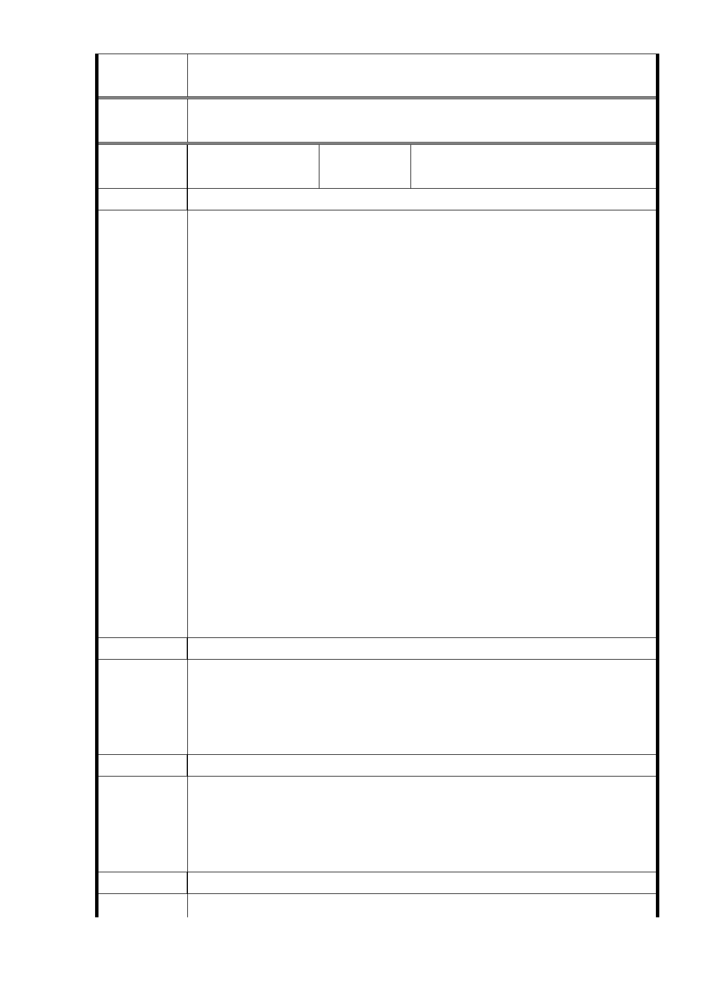

專案小組
審查結論
同編號 1。
委
決
員
會
議
同編號 1。
編號
57
陳情人
103 年 1 月 28 日廣慈博愛園區說
明會會議紀錄（2014.2.21 來函）
發 言 人 都發局
（1）有關廣博愛園區，95 年以前的法定容積就是 400％。當初
因考慮周邊交通環境不佳，故調整容積成 225％。而 BOT
設計時，所規劃的容積為 210％。
（2） 整體廣慈開發案三塊基地用途（商業區、公園及社福用地
），是 95 年經都市計劃委員會核定。
（3） 如民眾對新的都市計劃變更案有意見，都可以在都市計會
委員會審議時，向委員們表達意見。
（4） 目前福德派出所未達報廢年限，未來規劃可能會將其納入
發言內容
社福或公園用地內。
（5） 為解決周邊住戶停車問題，未來會規劃到社福用地內。
（6）社福用地容積 400％會重新評估，屆時由都委會決定。
（7）公營住宅是以中低收入青年年收入 130 萬以下為主，經濟
條件中間水準。以大龍峒公營住宅為例，目前是將各種階
層的人混居，所以不會有像過去平宅的問題發生。
（8）初估日後入住公營住宅的住戶約 6 成持有車輛，又因日後
有捷運設施，目前規劃約 1200 個汽車停車位。
（9） 會設定商業區開發條件，要求開發者要提供周邊里民停車
。
發 言 人 環保局
（1）依目前規定，住宅 30 層樓以上、商業建築 20 層樓以上需
發言內容
進行環境影響評估。
（2） 有關廣慈開發案是否須辦理環境影響評估，則需看屆時規
劃。
發 言 人 社會局
（1）廣慈 BOT 案，102 年 2 月仲裁市府勝訴，土地地上權已重
發言內容
新登記為市府所有。
（2） 目前福德平宅未達報廢年限，有提供作為電影拍攝之場景
。
發 言 人 大仁里里長蔡桂清
建 議 辦 法 （1）廣慈 BOT 案是否還再興訟？市府在法院判決未定讞前就
- 75 -